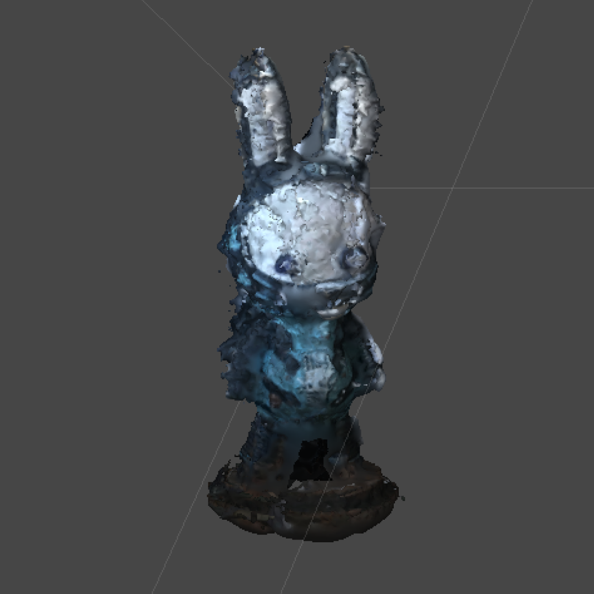
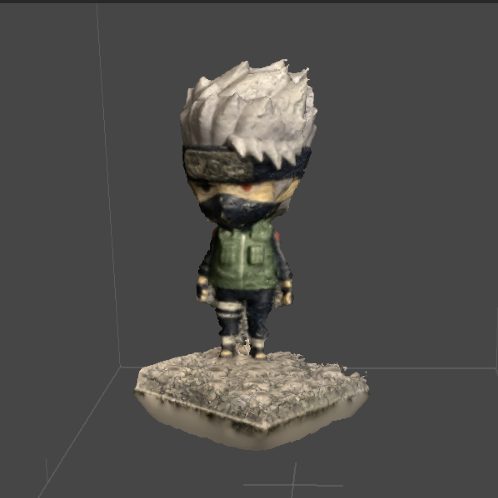

Creative Technology 3
Week 1: On "Programming Design Systems" by Rune Madsen
"...graphic designers have always used systems in their work. We use grid systems to balance our layouts and color circles to pick colors with proper distance to each other. History has shown us that systems can cure the fear of the blank canvas..." -
I particularly like that an example here is given as a way to connect graphic design to systems. I think most of time, the connection between graphic design and systems can be unclear, as some people might ask "What does graphic design, or making things look good, have to do with systems?". This quote gives a direct example of how systems are used in such a discipline. However, the part I like the most about this quote is the last sentence. I agree that without having some sort of system, it can be intimidating to start on a design when the canvas is blank. Without a system, I sometimes ask myself: Where do I start? What colour should I choose? It is interesting how even on a blank canvas, having a system, even mentally, will help with starting a design, and sometimes even gives us more freedom to try different things.
"Rather than trying to establish some unified theory about why color behaves this way, Albers describes how students can repeat these experiments to experience it on their own."
I am quite fond of the way Albers allows experimentation for the sake of personal experience, rather than trying to establish a unified theory on color. Building upon what was talked about in the text, on the objectivity vs. subjectivity of the experience of colour, I think that it is important to note that there are psychological aspects to color theory that are "objective" and should be considered, however it is also important to allow the designer or user to experience color and color combinations themselves for a subjective point of view. Albers' way of teaching experiments for students to experience things on their own is important for the combination of an objective understanding of color theory and a subjective experience.
Week 2: On Chapter 7 of "You Look Like a Thing and I Love You" by Janelle Shane
"People who use AIs that have been trained on human-generated text need to expect that some bias will come along for the ride–and they need to plan what to do about it."
It seems to me that the idea that 'bias will come along for the ride' is an obvious fact and it is common practice for designers, developers and those who work with AI to be aware and prepare to deal with bias, or perhaps even try to prevent algorithmic bias, but I then wonder why bias is so often overlooked? Is there a way in which people who are working with algorithmic bias in AI can be be better prepared with identifying bias? If AI "COPY THE HUMANS", like mentioned in this chapter, then perhaps instead of only being prepared for bias and planning what to do about it, people can undergo some sort of bias identification training themselves first, to identify their own biases and re-educate themselves to remove these personal biases before working with AI, so that they have a better chance of not feeding AI with biased information through the capability of identifying biases more easily.
"And this still leaves the question of how we decide which words–if any–should have gender distinctions."
I'm not sure how I feel about this. On one hand, I feel that perhaps no words should have gender distinctions. Perhaps if there are no words with gender distinctions, then the bias problem with words and their connection to gender might be solved. However, even if there are no words with gender distinctions, there might still be gender bias from text used in the internet. So on the other hand I feel like I recognize the problem is not within words that have gender distinctions, but how people perceive genders in general.
"And those people will need to be familliar with the ways AIs tend to succeed or go wrong. It's a bit like checking the work of a colleague–a very, very strange colleague."
What interests me here is the idea of looking at AI as colleagues (very, very strange ones), not machines or tools. It's interesting to look at AI as not just tools that we use but perhaps beings that need to be taught team values and how-tos, the same way we would a new, slightly lost and very strange colleague. If we treat them as beings (colleagues) and not as tools, then maybe we'll be able to identify the biases that they learn through the data we feed them.
Project 1: Whispers to Alexa - A Rube Goldberg Machine
Group Members: Isabelle Chaligne, Tingyi Li, Elaine Purnama
For this three week assignment, we were asked to look at The Web as a Rube Goldberg Machine - a machine / system where the user initiates a single action, which triggers a chain of events.
Our first thought was a poetry generator machine, using this kind of system:

Due to time constraints, we had to modify our plan, and decided to play with what we could do instead. We finally decided on the concept of the telephone game, or Chinese Whispers, where information is transferred (and usually changed) from one person to another.
This is the system we came up with:

Final Video:
Given more time, we would have liked to add more parts to the system. We initially tried to use Musixmatch in the process between Twitter and Spotify, so that the tweet would trigger a song search in Musixmatch, which would save the first song listed in the search, and would then trigger another search in Spotify using the title of the saved song. We were unable to get this to work, so we removed it, but would like to add other applications as part of the system.
Week 3: On "Notes on Failure" by Joyce Carol Oates
" What is your work-schedule, one writers asks another, never What are the great themes of your books?–for the question is, of course, in code, and really implies Are you perhaps crazier than I?–and will you elaborate?"
This quote makes me think of "hustle" culture nowadays, and the concept of working on something no matter the circumstance BECAUSE you love / are passionate about the thing. Even if you are tired, sick, or perhaps even burnt out, you are supposed to work on that particular thing just BECAUSE you love it and it is your passion, which is highly prevalent in the world of art and design (not exclusively, of course). I wonder where this culture and concept came from? Did it stem from a competitive nature between passionate people? Or perhaps it stemmed from the necessity to survive in an increasingly commercialized world?
"In this, the art of reading hardly differs from the art of writing, in that its most intense pleasures and pains must remain private, and cannot be communicated to others. Our secret affinities remain secret even to ourselves...we fall in love with certain works of art, as we fall in love with certain individuals, for no very clear motive."
Sounds romantic, doesn't it? Something about the reasoning behind our affinities being secret, unable to be communicated to others feels so mysterious and appealing to me. Perhaps that we love what we love, we resonate with what we resonate with, and are unable to express the very reasons why just makes the entirety of it much more personal that it already is. It feels to me like a kind of secret world unaccessible to other people, the things we love occasionally being small glimpses into these worlds (if we look hard enough). As designers and artists, perhaps it is part of our toolkit to be able to take a peek and perhaps even scratch the surface of understanding what we see in the small windows into other people's secret worlds.
"Let us reconsider. Isn't there, perhaps, a very literal advantage, now and then, to failure?–a way of turning even the most melancholy of experiences inside-out, until they resemble experiences of value, of growth, of profound significance?"
I absolutely agree with this quote. Failure is so often intimidating, something we try to stay away from, and perhaps that is as it should be, as we try to succeed in whatever we try to do. But perhaps we can be less intimidated by failure, as failure can often lead to serendipity. And serendipity should be welcomed, especially in the field of design where we iterate over and over. Perhaps then we can create and design with more confidence.
Week 4: On Chapter 2 "A Brief Visit to the Systems Zoo" of "Thinking in Systems" by Donella H. Meadows
"Just as zoo animals more naturally occur mixed together in ecosystems, so the systems animals described here normally connect and interact with each other and with others not illustrated here—all making up the buzzing, hooting, chirping, changing complexity in which we live."
The image drawn here of a zoo in parallel to a system I think is a very clear way to explain systems and observation of components of a system outside of the interactions within the system. Much like observation of human behavious in isolation, it does give us some information, but not all information required to understand how humans interact with other humans, animals, systems and beings. In order to truly understand the behaviour of system components, zoo animals, or human beings, I think it is important to observe them not only in isolation but in context within their ecosystems.
"Dynamic systems studies usually are not designed to predict what will happen. Rather, they're designed to explore what would happen, if a number of driving factors unfold in a range of different ways."
I find this quite interesting and a little bit unexpected as I imagined dynamic systems designed to predict the possibilities of what will happen. But perhaps thinking about the possibilities of what will happen (and not predicting exactly what will happen), is in fact more efficient, exploring all the different possibilities of what might happen depending on the driving factors and unfolding situations.
Week 5: On "Petri Dish" by Elizabeth F.S. Roberts & Chapter 3 "Design as the Machines Come to Life" of "Synthetic Aesthetics" by Alexandra Daisy Ginsberg
"In-vitro fertilization (IVF) brought us the ubiquitous image of the “test tube baby,” but as anyone with a passing familiarity with techniques of assisted reproduction knows, the more accurate image would be a “petri dish baby.”
This is funny to me, as the ubiquitous image of the "test tube baby" is definitely something that I feel I learned through media while growing up. So I wonder where the origins of the image of the "test tube baby" came from, if in fact, it is not "test tube baby" but "petri dish baby". Was it a lack of information? Misinformation? Or was it perhaps simply because "test tube baby" is more catchy, more likely to become a ubiquitous image and therefore chosen to be the term?
"Plastic’s promise – derived from the bio-industrial processes that offered manipulability, separation, and disposability, world without end …Amen – might be waning. "
I find this idea fascinating: The idea that plastic had promise; Plastic offering a world without end. Was it a lack of information and knowledge that led to the belief in this promise? Or was it naivete? Or perhaps...was it the desire to not look to deep into the fine print of such promise? Either way, I am intrigued by the phrasing of this quote and the ideas of how the promise came to be widely accepted.
"The black box of the petri dish is opening…. but to what? Maybe to an expanded sense of contaminates, where contamination prevention is impossible, since entanglement is existence. Isolating entities and controlling for all variables might no longer be the goal, as both the biological and social sciences model a more Lamarkian, dare we say Herderian world, where “to be is to be related.”"
This makes me think of a previous body of text we read about systems. Perhaps in this case, the petri dish is akin to the zoo, separating organisms from each other, in order to observe them. The idea where contamination prevention is impossible (not only relevant regarding COVID-19), makes me think of the way we live, and the way everything is connected to each other. Perhaps it is about understanding the world as a bigger ecosystem, every organism connected to each other, rather than seeking understanding through observation in isolation.
Project 2: Rate My Setup
For this project, we were asked to create a digital altar for ourselves, displayed in our Zoom cameras using Unity and OBS. During the few weeks we worked on the project, we learned how to do photogrammetry, transfer the photogrammetry objects into Unity, and then create the altar in Unity to be displayed on Zoom through OBS.
Here are photos of figurines that were successfully turned into objects for Unity through photogrammetry:

As the first attempt at photogrammetry, I think the Jade Rabbit figurine came out quite successful even though the results were still quite rough.
This is the second attempt at photogrammetry, which I think came out looking good and smoother than the previous attempt.

Final Video:
Reflecting on the process and results of the Rate My Setup mini project, I think that I would have liked to have more time to try using photogrammetry for more objects, perhaps even objects outside of my living space to fit with the mystical forest vibe I get from the results of the setup. It would have been nice to also look for more objects to fit with the theme in different websites such as 3dwarehouse.
Week 6: On Chapters from "Ruined by Design" by Mike Monteiro: "Moving Fast and Breaking Things", "All the White Boys in the Room", "Choosing Where to Work", "How to Set up for Success" and "Oh, the Monsters We'll Kill"
"There are two words every designer needs to feel comfortable saying: "no" and "why." These words are the foundation of what we do. They're the foundation of our ethical framework. If we cannot ask "why," we lose the ability to judge whether the work we're doing is ethical. If we cannot say "no," we lose the ability to stand and fight. We lose the abiility to help shape the thing we're responsible for."
While empowering and channeling a call for standing up for what we believe to be ethical, I think that for many people, it isn't as simple as having two words that we may feel comfortable saying. In fact, in many circumstances, I believe that it is actually quite difficult for some people, especially people who are oppressed within the industry / workplace, to ask why, not to mention to say no. In these cases, I think that these people may feel like they are in difficult positions where they are unable to say or express how they truly feel, out of fear that there are repercussions to speaking up. So, while I agree that we designers need to be able to say no and ask why, I think there are underlying problems within the industry and system that need to be addressed so that designers feel comfortable doing so.
"We are gatekeepers. Nothing should be making it through the gate without our labor and our counsel. We are responsible for the effects of our work once it makes it out into the world. What passes through that gate carries our seal of approval. It carries our name. We are the defense against monsters. Sure, everyone remembers Frankenstein's monster, but they call it by his maker's name. The worst of what we create will outlive us."
I like the way that this paragraph highlights the importance of considering the ethics of what we design and the technology that we use. Before reading this passage, I didn't really consider designers as gatekeepers, although I did find importance in critically examining our work and considering the ethics and morals of the objects and experiences we design. This passage has really made me think of how firmly we must plant our feet in the consideration of ethics in design.
"We're building complex systems that touch people's lives, destroy their personal relationships, broadcast words of both support and hate, and undeniably mess with their mental health. When we do our jobs well, we improve people's lives. When we don't people die."
Much like the previous quote, this quote really makes me think about our responsibility as designers, and the importance of recognizing the impact our work can have on the world. Even though perhaps our single body of design work may not impact that many people at all, I believe that design as a discipline has the responsibility of understanding and recognizing the impact of our work as a collective. It is our responsibility, then, to make sure that our work as a collective does not harm people and instead improves people's lives.
Project 3: Making Spaces
The brief for this project was to imagine and stage a speculative making space, considering the materialities, locatedness, process, tools, politics of making, and making's relationship to technology, design and designing. (Condensed and paraphrased from in-class brief written by faculty.)
At the start of the project, I looked at the objects that I had in my own living space, and found that I had many fine art painting materials. In order to transform the space into a critical making space, I began to think of what I could use the painting materials for. Looking at inspiration from articles and tweets I had seen appearing often at the time, I began to look into Crypto Art, and decided to create a space for a Traditional Crypto Artist. However, as I reiterated through the idea and through the making space, it felt as though a making space solely for a "Traditional" Crypto Artist was simply not enough. Looking further into Crypto Art, I found the critiques of Crypto Art and its hugely negative effects on the environment. Critically analyzing this position, I decided to make a A Making Space Where Eco-Conscious Crypto (Traditional) Art is Made, making sure that I added elements within the making space that highlighted the very meticulous, data driven parts of Crypto Art and the aspect of it's energy consumption.

Final Video:
I really enjoyed this project within the limitations of it being difficult to make and acquire different props, as it pushed me to be more creative with what I already had nearby. Resisting the urge to buy items, tools and props for the sake of creating and curating the space, I feel like setting these restrictions and limitations allowed me to really focus on the critical lens and concept of the project, and being creative through other means.
Project 4: Personal Project: Living Spaces
As part of a personal project, we were asked to explore a specific interest for two weeks. My specific interest for this project was 3D Virtual Spaces, so I set out to work on spaces in Unity. Originally attempting to recreate spaces out of simply one type of furniture. For example, a room/3d space entirely made out of chairs, aside from the walls. However, I pivoted towards the direction of attempting to simulate movement of spaces such as earthquakes, shaking and jumping.
Here are the result videos of experimental making.
The Shaking Classroom
The Jumping Classroom
The Quaking Classroom
Despite the frustrations of coming across problems that I was unable to find the source or solution for, simply from trying different things in Unity and testing them out to see what would happen, I feel like I learned something and definitely learned a type of making. Unlike doing research first and trying to understand the software fully before attempting to make, it was interesting to dive straight into trying and tinkering with Unity, learning through the making process itself.